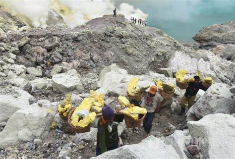
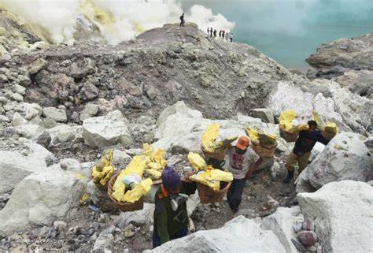

Kawah Ijen
Wisata alam kawah ijen merupakan objek wisata yang telah dikenal luas oleh para wisatawan domestik dan asing karena keindahan alamnya. Setiap harinya Kawah Ijen tak pernah sepi dari pengunjung. Pada hari-hari biasa pengunjung Kawah Ijen rata-rata hannya ratusan orang. Namun, pada week end atau hari libur bisa mencapai lebih 2 ribu orang,bahkan pada momen tertentu seperti malam pergantian tahun,pengunjungnya bisa mencapai 4 ribu lebih. Setiap tahun selalu terjadi peningkatan jumlah pengunjung, baik domestik maupun mancanegara,seiring dengan meningkatkan popularitas Kawah Ijen.
Pesona Keindahan Kawah Ijen
Kawah Ijen dari atas Gunung Ijen terlihat sangat indah. Kawah ini merupakan danau yang besar berwarna hijau kebiruan dengan kabut dan asap belerang yang sangat memesona. Selain itu, udara dingin dengan suhu 10 derajat celcius,bahkan bisa mencapai suhu 2 derajat celcius,akan menambah sensasi tersendiri. Berbagai tanaman yang hanya ada di dataran tinggi juga dapat Anda temukan,seperti Bunga Edelweis dan Cemara Gunung.
Penambang Belerang Tradisional
Salah satu yang menjadi perhatian pengunjung di kawasan Kawah Ijen adalah adanya penambang belerang tradisional. Mereka dengan berani mendekati danau untuk menggali belerang dengan peralatan sederhana lalu dipikul dengan keranjang.